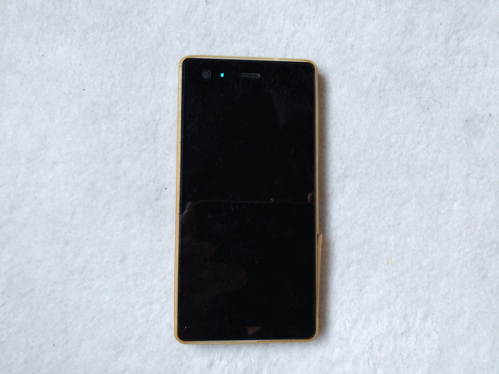
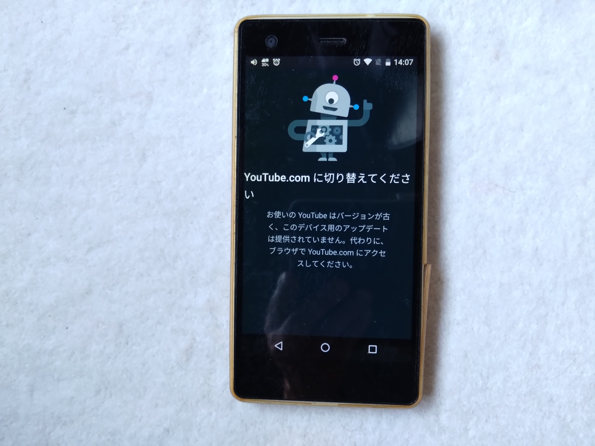
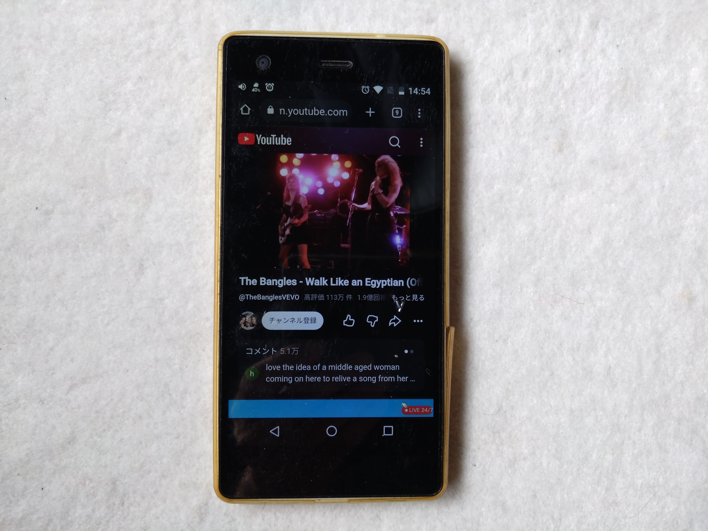

🏯 妄想博士の研究所 ＞ 📷 Canon IXY研究
ようこそ、Vaio Phone研究室へ！
この研究室では、
今や化石と化したVaio Phoneを復活させる
プロジェクトを載せていくぞょ！
━━━━━━━━━━━━━━━━━━

２０１７年に発売されたVaioPhone。
VaioブランドでAndroidが内蔵されたと話題になったスマホである。
ワシは発売を心待ちにして購入したことを今でも覚えている。
しかし、それから早くも１０年を迎えようとしている。
Android Ver6.0.1を搭載しているが、最近のアプリはほとんど未対応となってしまった。
しかし、
ワシはこの愛着のある機種をまだまだ現役で使いたかったのじゃ
試しにYoutubeを起動してみた

もう、使用できないと表示が出る そこで、ふと「Web上ならどうなのか！？」と 妄想してみた。

今日はGitHubで
Canon IXY研究室を改装中じゃ。
これから写真も増やして、
もっと楽しい研究室にしていくぞょ！
ムホホホ！！